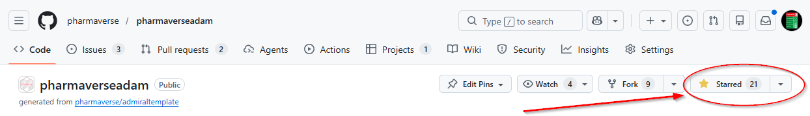

The Smallest Contribution You’re Probably Not Making
You’ve used {admiral} to derive your ADSL. You’ve leaned on {metacore} to wrangle your metadata. You’ve validated your XPT files with {xportr} and scored your package risk with {riskmetric}. These tools have saved you hours, reduced errors, and helped you build CDISC-compliant submissions that you can be proud of.
So let me ask you a direct question: have you starred those repositories on GitHub?
If the honest answer is no, you’re not alone — and this post is for you.
What Is a GitHub Star, Really?
On the surface, a GitHub star looks like a simple bookmarking mechanism. You click the ⭐ button on a repository, and it gets added to your “starred” list for easy retrieval later. Simple enough.
But in the open-source world, stars are much more than bookmarks. They are a public signal of trust, adoption, and community health. They are the currency through which the broader developer ecosystem evaluates whether a project is worth its attention. And in the pharmaverse — where we are actively working to prove to regulators, IT departments, company leadership, and the broader pharmaceutical industry that open-source R tools are production-ready — that signal matters enormously.
Why Stars Matter More Than You Think
1. Stars Influence Discoverability
GitHub’s search algorithms use star counts as a key ranking signal. When a clinical programmer who is new to the pharmaverse searches for “ADaM R” or “CDISC R package”, the packages that appear at the top of those results are influenced — in part — by how many stars they have. A package with 50 stars looks like a niche experiment. A package with 500 stars looks like an industry standard.
We want the pharmaverse to look like what it actually is: the de facto open-source toolkit for clinical reporting in R. Stars help make that case.
2. Stars Signal Community Health to Decision Makers
When a statistician at a pharmaceutical company proposes adopting {admiral} for their ADaM pipeline, they will face scrutiny. Their IT colleagues, their validation teams, and their management will look at that GitHub repository and ask: Is this actively maintained? Does anyone use this? Can we trust it?
Star counts — alongside download statistics, test coverage, commit frequency, and contributor counts — are among the first things people use to answer those questions. A healthy star count communicates that this package is used by real people, in real organizations, doing real work. It lowers the perceived risk of adoption.
For those of us who have spent years making the case for open-source tools in pharma, every star on a pharmaverse repository is another data point in that argument.
3. Stars Are Meaningful Feedback for Maintainers
Open-source maintainers in the pharmaverse are often donating their time on top of demanding full-time jobs. They write vignettes, triage issues, review pull requests, and cut releases — frequently without any direct recognition from the people who benefit most from their work.
A star is not just a number. It is a thank you note that scales. When a maintainer opens their repository and sees that the star count has grown, it communicates something important: people are finding this, using this, and valuing this. That feedback matters for morale, and morale matters for sustainability. The packages you depend on are only as healthy as the people who maintain them.
4. Stars Factor Into Organizational Prioritization
Within many pharmaceutical companies and the organizations that develop pharmaverse packages — including those contributing to the admiral family, the NEST framework, the R Validation Hub, and others — resource allocation decisions are influenced by signals of community engagement. Star counts and download trends are real inputs into conversations about where to invest developer time and organizational support.
When you star a package, you are quietly but meaningfully adding your voice to the case for its continued investment.
5. Stars Help Justify Open-Source in Pharma
Our industry is not the easiest audience for open-source advocacy. We operate in a validated, regulated environment where change is scrutinized and risk aversion runs deep. The transition to open-source tools — and the cultural shift toward open, collaborative tool development — is still very much in progress.
GitHub stars are one of the few public-facing metrics that non-technical stakeholders can easily interpret. A director reviewing a proposal to adopt {xportr} may not understand R package architecture, but they do understand the difference between a tool with 20 stars and one with 500. That number tells a story, and we should be telling it accurately.
The Visibility Gap
Here’s the honest reality: pharmaverse packages are used far more than their star counts suggest. Many clinical programmers access these tools through internal environments where GitHub access is limited or indirect, deriving real value without ever navigating to the source repository. Stars only reflect the people who made it to the repo — and we can do better.
How to Star a Repository
Starring a repository takes just a few seconds. Here’s where to click:

- Navigate to any pharmaverse package repository on GitHub
- Look for the ⭐ Star button in the top-right area of the repository, just below your profile menu
- Click it once — that’s it!
The button will light up and turn yellow, confirming your star has been added. You can view all your starred repositories anytime in your GitHub profile under the “Stars” tab.
What You Can Do Right Now
If you use any of the following packages, please take 60 seconds and star their repositories:
| Package | GitHub Repository |
|---|---|
{admiral} |
pharmaverse/admiral |
{admiralonco} |
pharmaverse/admiralonco |
{Tplyr} |
atorus-research/Tplyr |
{rtables} |
insightsengineering/rtables |
{teal} |
insightsengineering/teal |
{tern} |
insightsengineering/tern |
{tidytlg} |
pharmaverse/tidytlg |
{tfrmt} |
GSK-Biostatistics/tfrmt |
{visR} |
openpharma/visR |
{ggsurvfit} |
pharmaverse/ggsurvfit |
{aNCA} |
pharmaverse/aNCA |
{rhino} |
Appsilon/rhino |
{metacore} |
atorus-research/metacore |
{metatools} |
pharmaverse/metatools |
{xportr} |
atorus-research/xportr |
{riskmetric} |
pharmaR/riskmetric |
{sdtm.oak} |
pharmaverse/sdtm.oak |
{pharmaverseadam} |
pharmaverse/pharmaverseadam |
{pharmaversesdtm} |
pharmaverse/pharmaversesdtm |
You can also see many pharmaverse packages in action in the pharmaverse examples site pharmaverse/examples which you can also star!
Starring a repository requires a free GitHub account. If you don’t have one, creating one takes about two minutes and is well worth it — it also opens the door to participating more directly in the community through issue reports, discussions, and eventually contributions.
Make It a Habit
The best time to star a repository is when you first discover that a package solves a problem you have. The second best time is right now.
I’d encourage you to take a few minutes today to review which pharmaverse tools are part of your workflow and star the ones you haven’t yet. Then consider sharing this post with a colleague who you know depends on these tools but may not have thought about GitHub engagement before.
The pharmaverse has grown into something remarkable — a genuine, cross-industry collaboration that is reshaping how clinical data science is practiced. It runs on contributions, and those contributions take many forms. Code, documentation, issue reports, and conference presentations are all vital. But so is the quietest contribution of all: clicking ⭐ to say I use this, I value this, and I want it to keep growing.
Last updated
2026-02-20 17:01:26.517297
Details
Reuse
Citation
BibTeX citation:
@online{dickinson2026,
author = {Dickinson, Jeff},
title = {A {Star} Is {Born:} {Why} {GitHub} {Stars} {Are} {Vital} to
the {Pharmaverse}},
date = {2026-02-17},
url = {https://pharmaverse.github.io/blog/posts/2026-02-18-a-star-is-born/a-star-is-born.html},
langid = {en}
}
For attribution, please cite this work as:
Dickinson, Jeff. 2026. “A Star Is Born: Why GitHub Stars Are Vital
to the Pharmaverse.” February 17, 2026. https://pharmaverse.github.io/blog/posts/2026-02-18-a-star-is-born/a-star-is-born.html.